教育经历Education
-
- 宁波大学科技学院
- 软件工程（本科）
- 2012 - 2013 学年度校一等奖学金
- 2014 - 2015 学年度校优秀毕业生
语言水平Language
- 能流畅阅读英文书籍、文档，应对基本英语沟通
- 能够在Github、Stack Overflow 等社区正常交流
项目与工作经验Experience
-
吉利控股集团杭州湾吉利研究院
- 前端开发（前端架构师）
- 负责公司企业级ODOO平台前端模块开发与维护，其中包括前端插件开发，主题定制化，性能优化，历史bug处理等
- 负责公司手持端设备资产录入项目的前端项目搭建与开发，采用 React+Hybrid App 混合开发模式开发安卓端App，支持手机和扫码枪的扫描与识别，方便业务人员设备清点，简化流程。
- 负责公司人力资源大数据展示平台的前端架构与开发，采用React+Echarts实现各部门人力资源数据实时动态可视化展示与切换，方便人力部门的各项指标统计
- 负责公司车辆竞品系统核心项目的前端二次开发，接手印度专业开发团队剩余的二期Angular项目，同时使用TypeScript来规范开发阶段的编写
- 负责公司变更管理系统的移动端审批项目，采用React+Ant+DVA+Redux+Umi模式搭建的多个H5应用，供研究院多个子部门使用
- 组织过多场前端方面的知识培训，包括ES6知识，移动端适配，前端前沿探索等
-
中塑在线股份有限公司
- 前端开发（前端工程师）
- 主要负责公司微信端订阅项目（塑料行情查询与VIP升级等）的前端整站开发
- 前端应用React框架，结合REM自适应解决方案，实现大小屏完美适配，脚手架工具采用webpack
- UI框架使用蚂蚁金服的Ant Mobile组件库
- 实现项目从ES5到ES6的过渡
- 项目上线后解决了公司业务在手机端的空白，新增了会员的入口
-
杭州心有灵犀互联网金融股份有限公司
- 前端开发（前端工程师）
- 负责公司手机端两款主要App（车险业务相关，日活在5w上下） HTML5功能需求迭代
- 对两个旧项目进行代码重构，前端采用framework7框架，结合百度fis3脚手架工具搭建开发流，重构后代码逻辑清晰，代码量减少，整体加载速度提升明显
- PC端实验项目使用网易的RegualrJS(类似VUE，能兼容到IE6),应用双向数据绑定特性，带来更好开发体验
- 协助前端开发主管整理前端开发规范，带领团队进行技术分享
-
- 仿微信跳一跳小游戏-React版
- 完美仿造微信官方跳一跳小游戏，并做了适当改进，将跳动的小人改用了3D模型人物导入
- 前端使用 Umi3.0 进行项目初始化的快速构建
- 前端使用 React+Redux+ThreeJs 作为基本技术栈，ES6+Typescript 作为基础js开发配置，采用蚂蚁金服Antd-Mobile作为UI框架
- 后端使用 Nodejs+MongoDB 作为服务端语言和非关系数据库调用
- 服务器端使用Now.sh和Netlify进行部署
技能Skills
-
Web 前端
- 基本技能
- 能够编写语义化的 HTML，模块化的 CSS，实现较复杂的布局与动画
- 熟悉已标准化的 HTML5 / CSS3 新特性，实验项目中能尝试使用未广泛实现的新标准
- 掌握目前主流前端框架特点，差异性和使用场景，熟练使用Angular/React/Vue等框架
- 熟悉NodeJS、Webpack、Gulp等前端环境与构建工具，对前端工程化有较深入研究
- 掌握Web前端开发基本技能，熟悉W3C标准、页面布局架构、前端语义化、浏览器兼容性、页面性能等
- 对前端自动化、前后端分离、前端开发流、工作流、Git协同开发等都有较丰富的经验
- 熟悉 ECMAScript（JavaScript）常用语法，关注前端流行趋势与技术走向
- 前端工程实践
- 使用 Angular / React / Vue / RegualrJS 编写过各类前端应用，了解个框架核心思想与部分原理
- 在项目中使用过 Sea.js / RequireJS / Bower / ES6 等多种模块化解决方案
- 在项目中使用过 Less / Sass / PostCSS 等预处理/后处理工具
- 熟悉移动端屏幕适配解决方案，rem布局和viewport布局等
- 日常使用 Webpack 、 Gulp 、Umi等前端工程化工具
- 熟练使用 Git进行版本控制和代码托管、Markdown进行文档编写
- 掌握基本的前端兼容性处理、性能优化知识与技巧，并能在项目中加以实践
-
Web 后端
- NodeJS
- 了解NodeJS基本开发模式，了解REST/GraphQL接口规范
- 了解ThinkPHP的MVC模式，用该框架给企业进行过整站开发
- 了解MongoDB、Mysql、SQLite等数据库的基本增删改查操作
-
其他
- 在SegmentFault和掘金等前端社区积极参与问答贡献，并发表过原创技术博客，并被官方微博推荐
- 熟悉Linux、Windows等多平台开发、熟练使用Webstorm、Sublime Text 3、Visual Code等编辑器,也乐于尝试新工具
- 能够熟练使用 Photoshop / Sketch / Adobe XD完成界面原型设计
-
参与过部门内部的绝大多数的海报，活动宣传文案设计工作
部分作品Part Projects
-
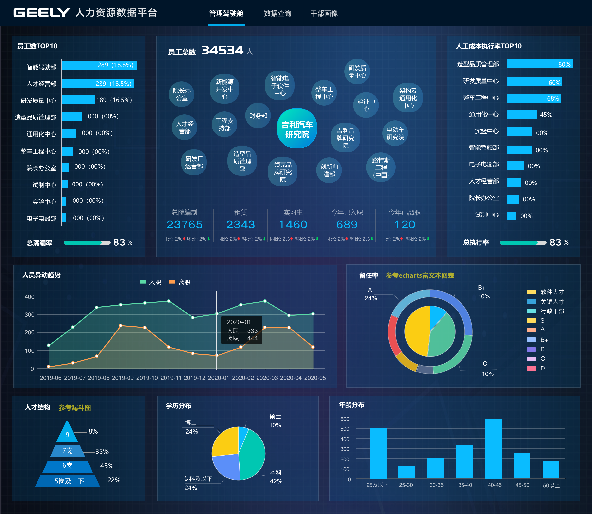
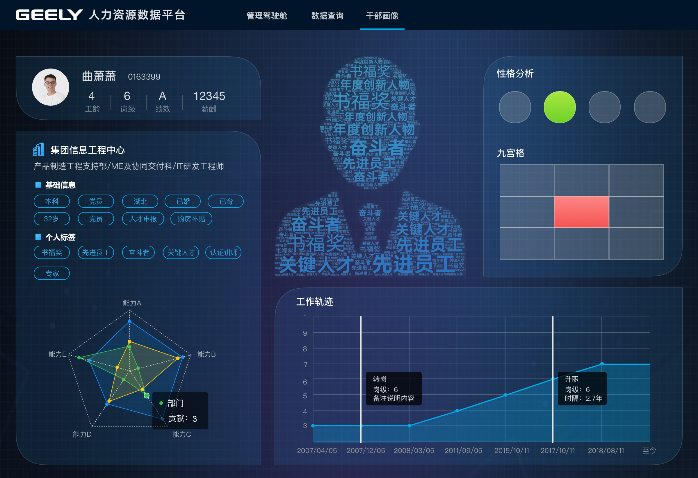
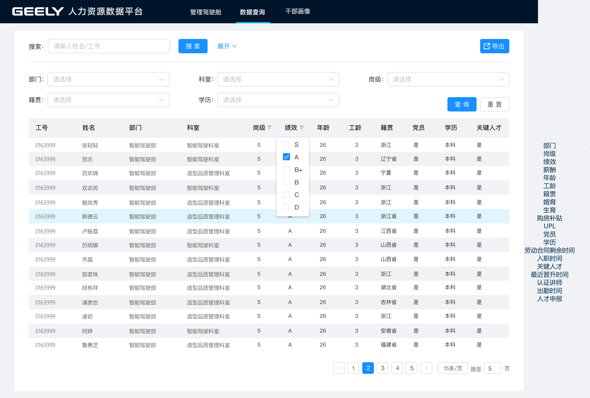
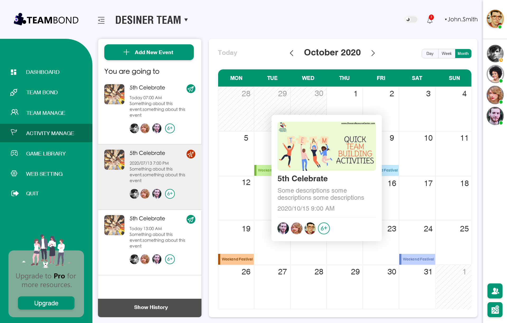
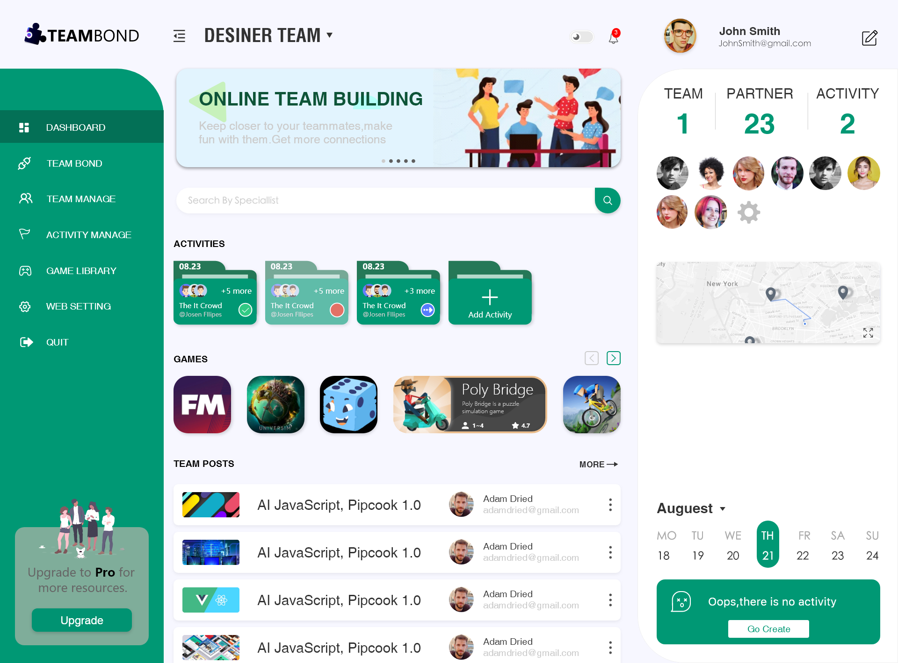
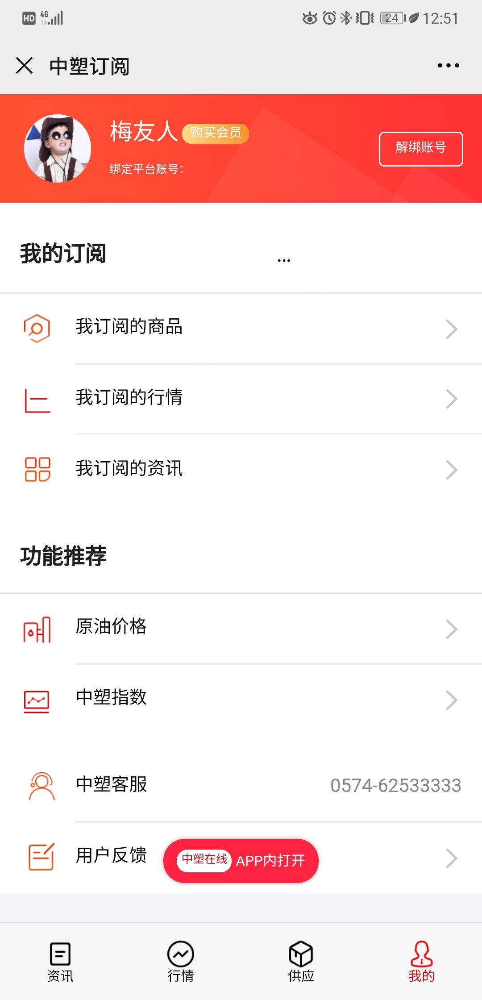
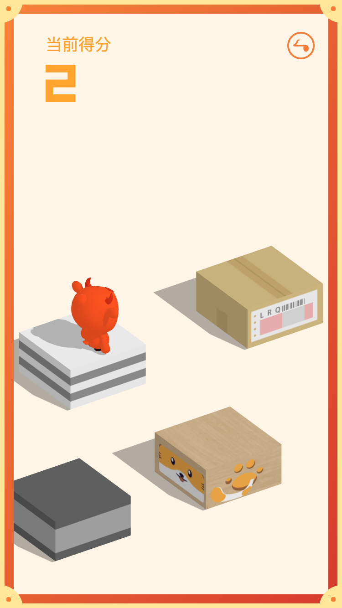
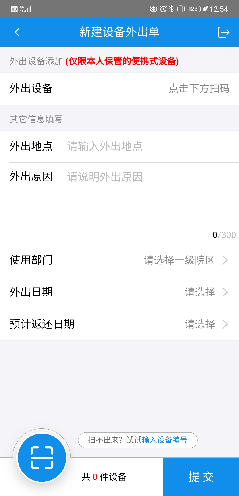

 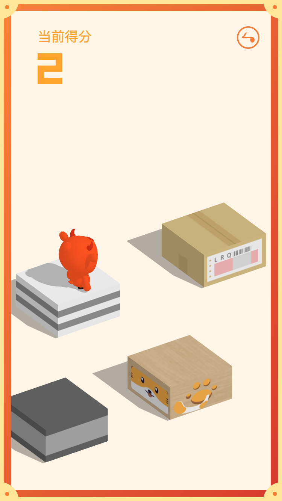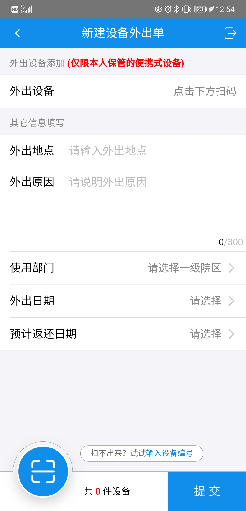
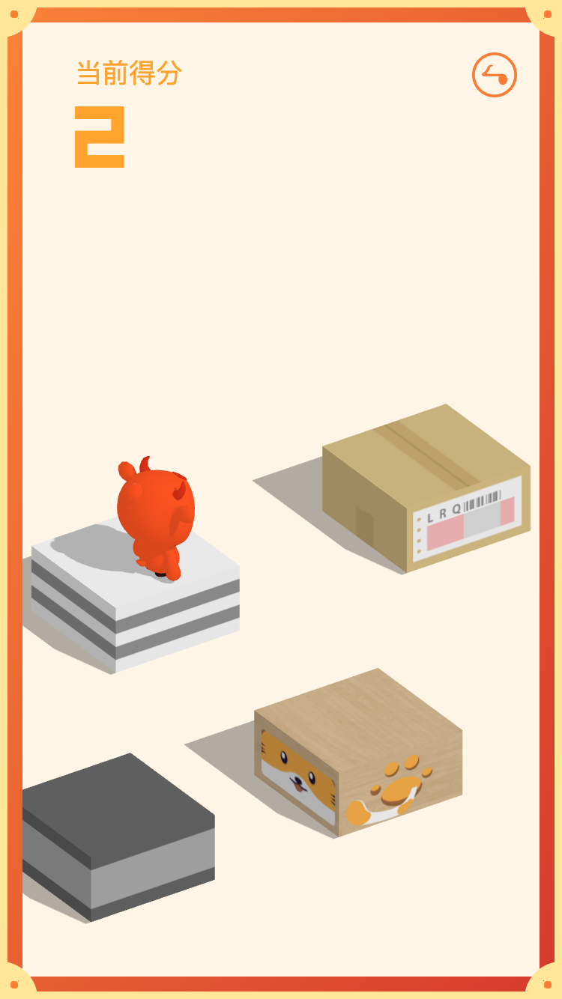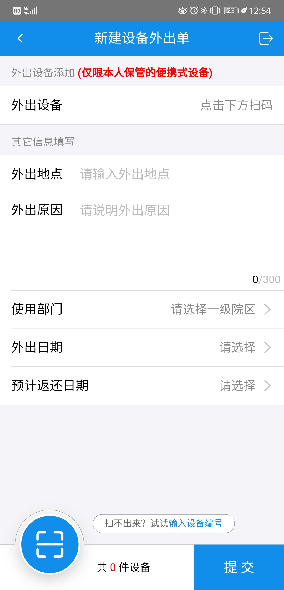